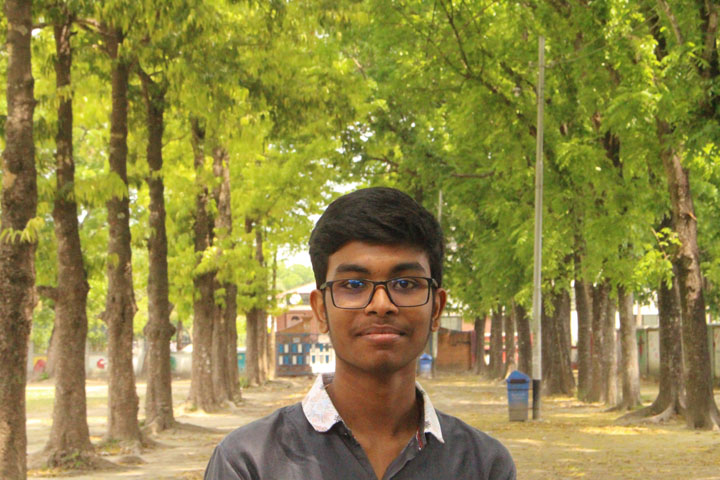
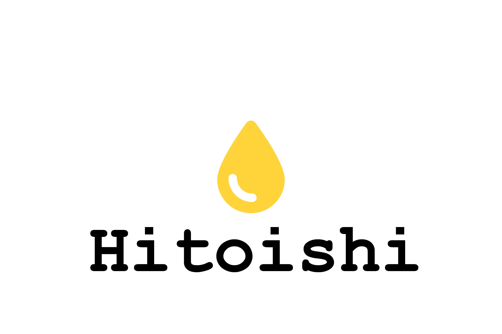
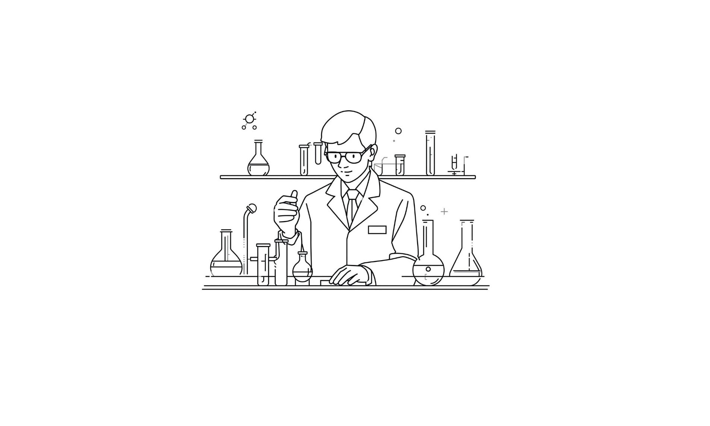
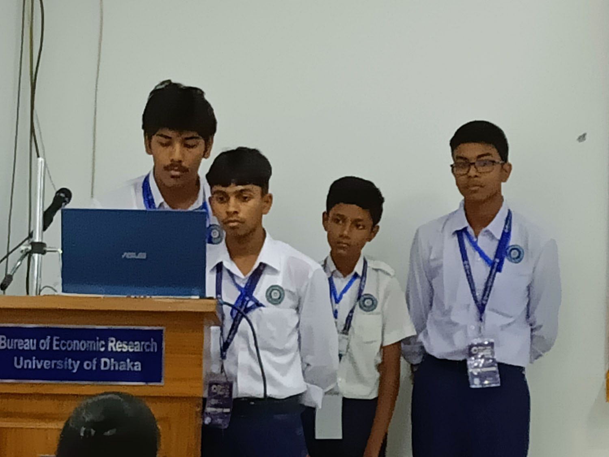
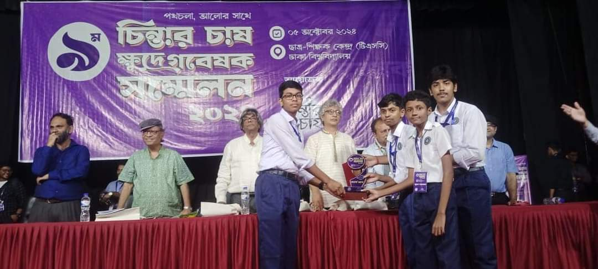

Frontend Developer & Researcher Crafting Seamless Digital Experiences.
10th-grade Student, Front-end Developer, and Passionate Researcher based in Rajshahi.

Currently a 10th-grade student at Rajshahi University School, I am a front-end developer who loves transforming creative ideas into clean, functional, and fast-loading web experiences. My technical stack focuses on HTML, CSS, and JavaScript. As a developer, I prioritize seamless User Experience (UX) and website performance above all else.
Beyond coding, I consider myself a researcher at heart. I am deeply imaginative, a lover of nature, and always eager to learn, discover, and embark on new adventures. I don't claim to be a perfect expert because I believe learning is a never-ending journey. I simply love what I do, and I am always striving to be better than yesterday. I am also a very communicative person who loves a good conversation!
Photography: I love capturing moments. While I am still learning and wouldn't call myself an expert yet, my passion drives me to practice and improve every single day.
Music & Cubing: I enjoy listening to music and solving Rubik's cubes in my free time.
Outside of programming and research, reading is my greatest passion. I am naturally drawn to non-academic books that expand my worldview. To date, I have read over 150+ non-academic books.
👉 [Click Here to Explore My Reading List] (Note: This page features a curated list of my most special reads, though it doesn't include every book I've finished!)
A collection of live web applications and collaborative real-world solutions built with HTML, CSS, and JavaScript.

A Clean and Responsive Web Application for Emergency Blood Donation Discovery.
Hitoishi is a real-world, collaborative platform designed to bridge the gap between blood donors and recipients during emergencies. Built with a focus on speed and ease of use, it features a seamless registration system for donors and an intuitive search interface for recipients. This project highlights my ability to create user-centric solutions using core web technologies.

This web portal was developed to bridge the gap between academic research and public accessibility. It serves as a dedicated platform to showcase our core research findings, methodologies, and data-driven results in a visually engaging and organized manner. Built with a focus on clean UI and seamless navigation, the portal ensures that complex information is easily digestible for the general audience.
Exploring theoretical concepts and practical problems through data-driven investigation and collaborative analysis.

Abstract: A low-cost engineering framework optimizing paper aircraft via computer vision and iterative design, bridging the gap between educational engagement and professional micro-UAV development competencies.
[View Details]
Abstract: A survey-based research analyzing generational shifts in student lifestyles, focusing on technology adoption, mental health trends, and physical well-being across the last thirty years.
[View Details]Have a project in mind, a research idea, or just want to have a friendly chat? My inbox is always open for creative discussions.